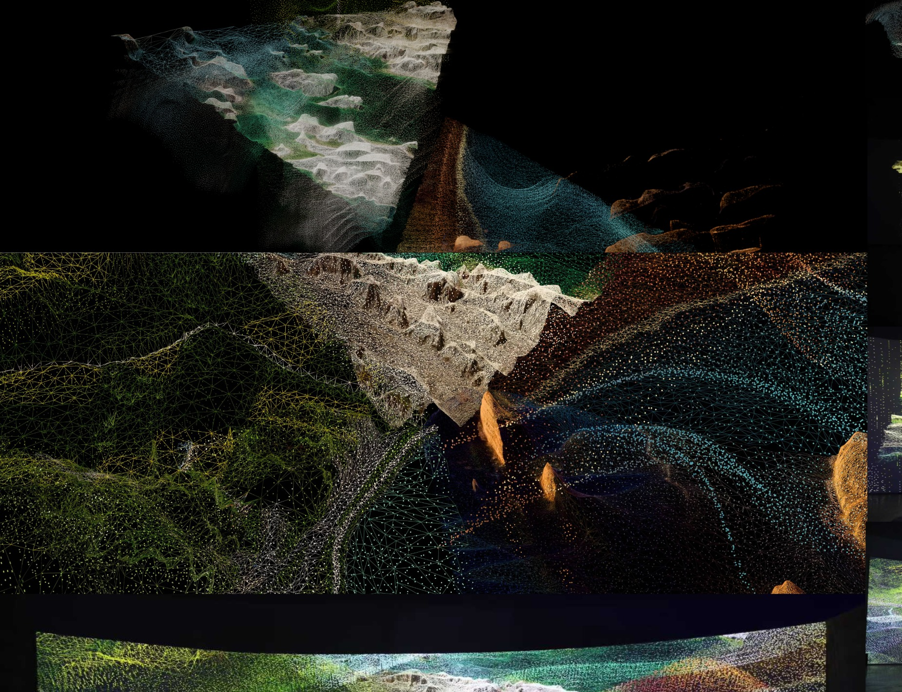

← 返回首页 / 代表作品

作品页
Observation and Symbiosis | 观察与共生
数据景观 / 数字自然 / 展览项目 / 公共数字艺术
Observation and Symbiosis 基于地理数据与动态粒子系统，将数据结构转化为持续生成的数字景观，是 VIRTURA 在展览与数字自然方向的重要项目。
2025 - 至今
从展览线索到公开项目持续出现。
数据景观
地理数据、粒子系统与数字自然的结合。
上海 / 深圳 / 北京
已在多个展览场景中落地。
联合创作 / 空间影像组织
由联合创作者共同推进展览与展示路径。
核心维度
项目的主要内容维度。
项目位置
以数据景观与数字自然为核心的展览项目。
Observation and Symbiosis 构成当前公开作品矩阵中的展览方向，与 Drop Flow 和 TIMER 形成互补。
当前页面集中呈现其项目说明、主要展览节点与公开入口。

页面结构
项目说明、展览节点、公开资料与活动路线在此集中呈现。
展览节点
主要公开节点
2026 / Shanghai
上海愚见观池艺术空间
构成近期公开展示节点之一。
2025 / Shenzhen
深圳坪山美术馆
进入“数字水族馆”群展语境，形成稳定展览记录。
2025 / Beijing
三里屯 T+MALL
进入公共数字艺术展语境，拓展项目的公共展示面。
公开入口
当前公开入口
公开阅读路径
项目目前通过正式作品页、公开资料索引、展览记录与相关活动路线对外开放。
后续资料
展览海报、现场图、策展说明与媒体报道可继续补充。
站点位置
该项目对应团队网站中的展览与数据景观方向入口。